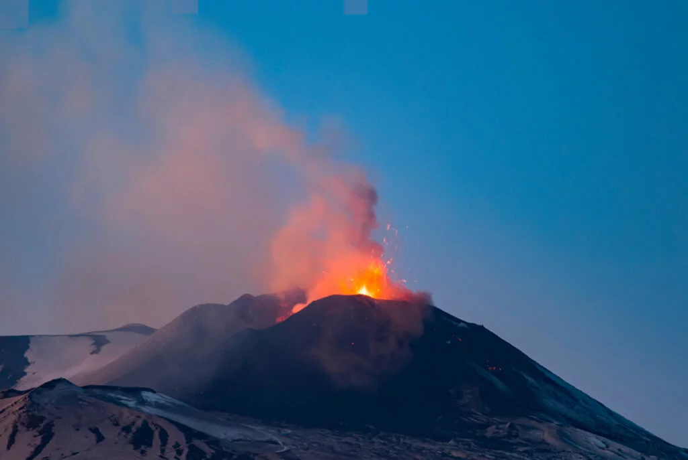
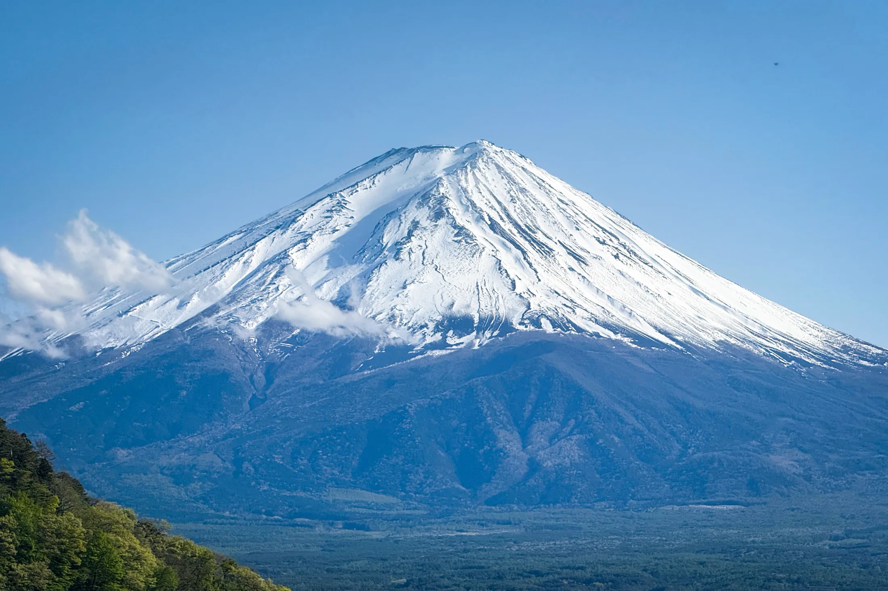
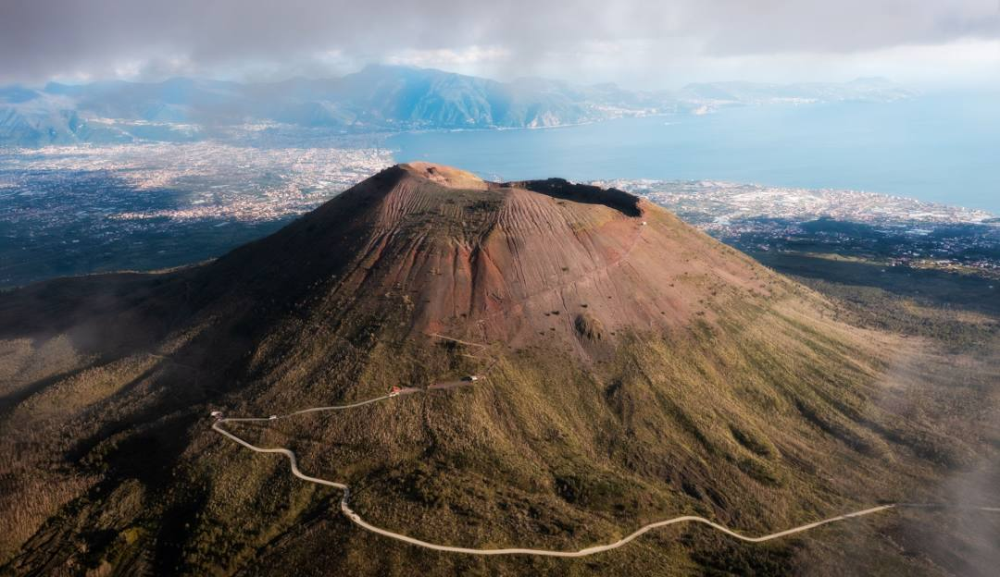

VOLCANO
Geologische Grundlagen
Wenn der Berg erwacht
Scrollen Sie durch eine interaktive Vulkanlandschaft. Scroll-basierte Animationen visualisieren Lava, Rauch und Eruptionsphasen in Echtzeit.
Geologische Grundlagen
Was ist ein Vulkan und wie entsteht er?
Ein Vulkan ist eine Öffnung in der Erdkruste, durch die Magma, Asche und Gase aus dem Erdinneren an die Oberfläche gelangen können.
Divergierende Platten
Zwei tektonische Platten bewegen sich voneinander weg. Durch den Druckabfall kann Magma aufsteigen und neue Erdkruste bilden.
Konvergierende Platten
Eine Platte taucht unter eine andere ab (Subduktion). Dabei entsteht Magma, das häufig zu explosivem Vulkanismus führt.
Hotspots
Ortsfeste Magmaquellen im Erdmantel. Bewegte Platten bilden über Hotspots Ketten von Vulkanen.
Fünf Vulkantypen
1
2
3
4
5
Galerie: Vulkane weltweit



